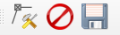

Présentation Complète¶
Le menu¶

Interface :¶
Ce menu permet de changer d’interface. Trois modes sont actuellement disponibles :
L’interface « terrain »
Cette interface est épurée et est destinée à l’utilisation par tablette lors des campagnes de terrain.
L’interface « bureau »
L’interface bureau permet d’accéder à l’ensemble des tables et champs de Lamia.
L’interface « Post-traitement »
Cette interface permet d’accéder à l’ensemble des modules de post-traitement (Cf. description et utilisation Dans le paragraphe dédié).
Préférences :¶
Répertoire des photos¶
Le fait de configurer ici le répertoire où sont stockées les photos prises à l’aide de la tablette permet d’utiliser l’outil « Baguette magique » lors de l’utilisation de la table photo. En effet, la baguette magique ira automatiquement chercher la dernière photo prise avec la tablette.
Fonctions GPS¶
Se connecter au GPS Qgis
Cette fonction permet, une fois que le gps de qgis est opérationnel (Cf. prise en main rapide) de coupler Lamia avec le GPS. La barre GPS apparait alors verte en bas de la fenêtre Lamia :

Hauteur de la perche GPS
Permet de rentrer la hauteur de la perche GPs dans le cas d’un GPS centimétrique avec relevé de l’altimétrie.
La barre d’outils:¶
Edition d’objet¶

Creation d’objet
Permet la création d’un nouvel objet
« Baguette magique »
Permet la création de fonctions de raccourcis - souvent la création automatique de l’objet à l’endroit de la position GPS lors de la campagne de terrain.
Annuler les modifications
Supprimer l’objet
SAuvegarder l’objet en cours d’édition.
Edition de geometrie¶

Saisie d’un nouveau point
Saisie d’une nouvelle ligne
Saisie d’un nouveau Polygone
Rajout d’un point à une polyligne
Rajout d’un point depuis la position GPS.
Cette fonction nécessite que le GPS de Lamia soit connecté.
Edition de couche vecteur¶
{kind=link}
Ouvrir la couche vecteur de l’objet en cours d’édition
Ceci permet notamment pour les lignes et les polylignes d’acceder aux fonctions d’édition de géomtrie avancées de QGis.
Quitter les modifications sans sauvegarder.
Enregistrer les modifications.
Outils¶
Cette barre permet d’acceder à divers outils, tels l’impression.